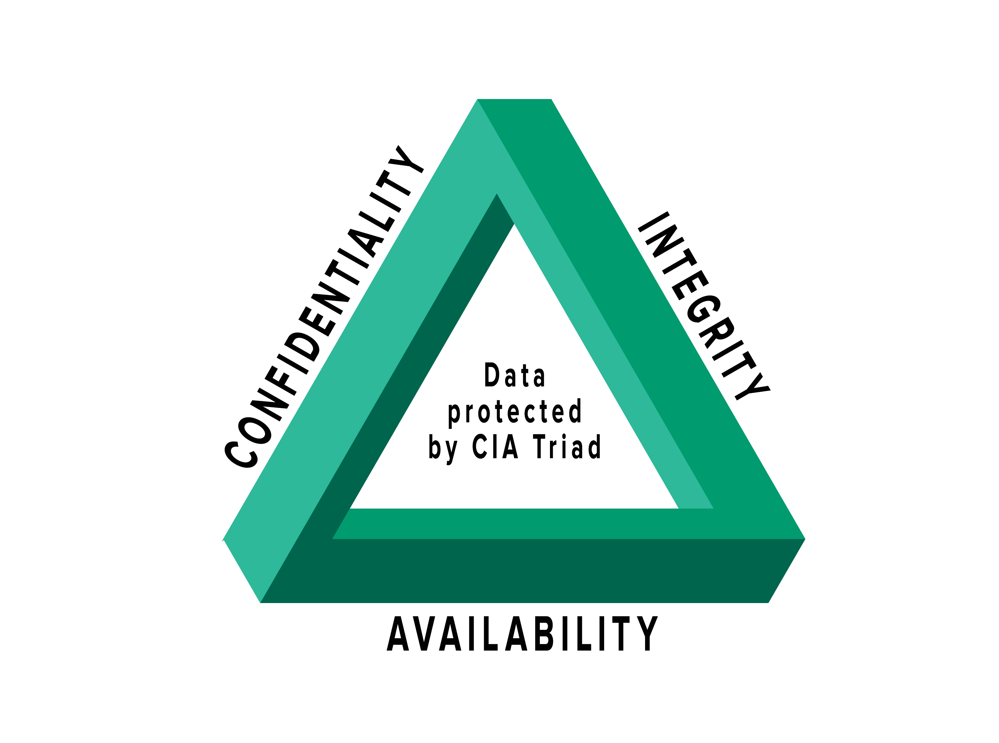

Triada CIA
Najważniejsza i klasyczna triada dotycząca bezpieczeństwa informacji znana jest jako Triada CIA: poufność (confidentality), integralność (integrity) i dostępność (availability) – trzy filary bezpieczeństwa informacji.
Poufność – confidentality
Poufność dotyczy dotrzymywania sekretów. Ochrona danych, patentów, kontraktów, danych finansowych, a także danych osobowych pracowników, konsultantów, klientów i partnerów biznesowych. Ogrom naruszeń danych, o których słyszymy w wiadomościach, jest pogwałceniem poufności. Jeśli nie chcesz widzieć żadnych osobistych danych w nagłówkach gazet lub w Internecie, chroń je i uważaj za prywatne.
Integralność - integrity
Integralność dotyczy dokładności. Nauka tego, jak odnajdywać błędy, może być tak prosta, jak dwukrotne sprawdzanie, do kogo wysyłasz maila, uważna analiza raportów finansowych lub spostrzeganie potencjalnego phishingu, gdy maile wyglądają podejrzanie.
Dostępność - availability
Dostępność oznacza to, że system, którego używasz, działa na bieżąco i właściwie. Innymi słowy, masz dostęp do informacji i zasobów, których potrzebujesz, wtedy, kiedy potrzebujesz.